The previous set was rejected for not resembling Ryan, for SSJ1 facing away, and for the forms looking past the viewer. This one is built from his own photographs, and every state faces the viewer: each is the south rotation of a character state, so a forward gaze is a property of the render rather than something hoped for.
One internal identity was built first, deliberately with a buzz cut so no curls can survive under gold hair. Normal, SSJ1, SSJ2 and SSJ3 are each a state of that identity — none is chained off another, so a defect in one cannot travel into the next. The rejected set is kept at rejected-0887f3f/ and is not shown here as a current result.
Ryan — the identity references
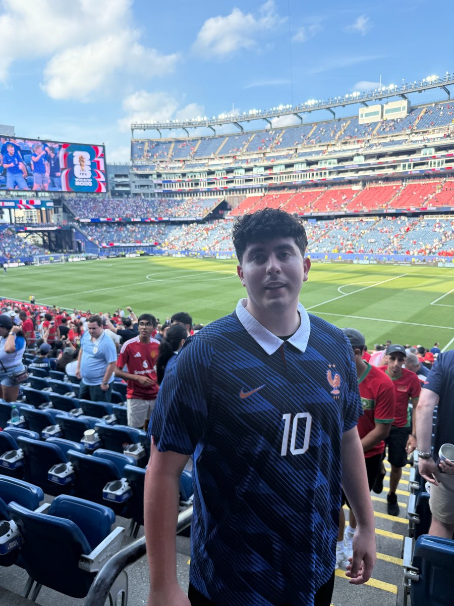
Primary front reference: face, hair, build and jersey
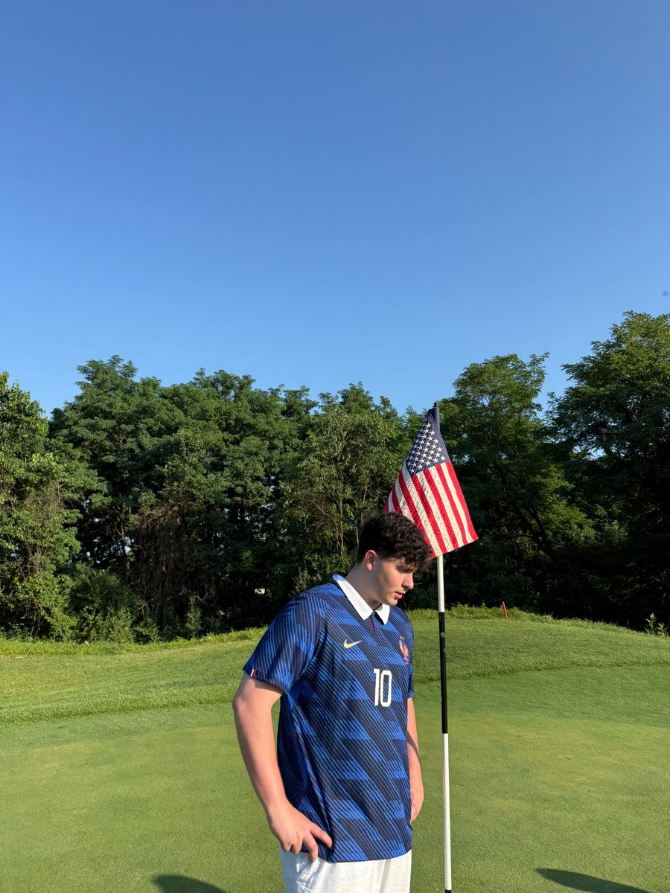
Side reference: nose, curls, torso and arm proportions
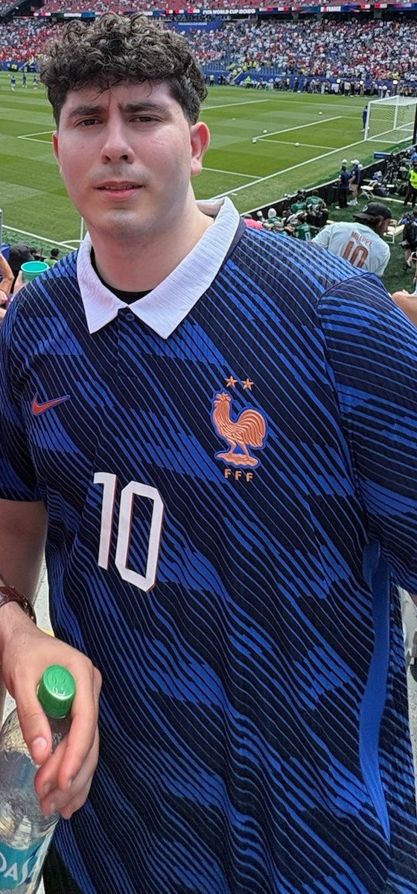
Group photo, CROPPED TO RYAN — he is the one in the navy France jersey with the white 10, on the right of the original frame. Cropped rather than published whole: the other person in it has not agreed to appear on a public page.
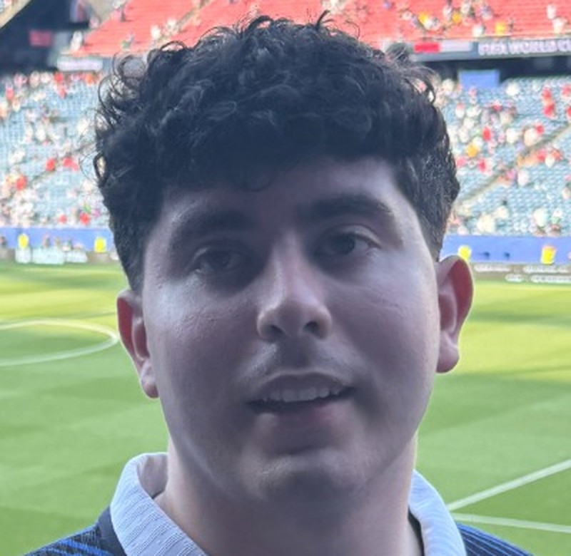
Front — face crop
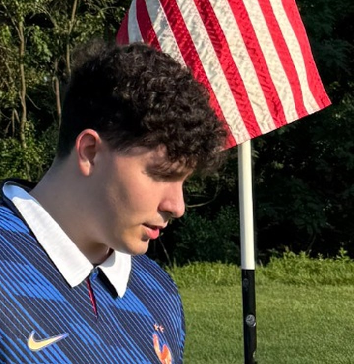
Side — face crop
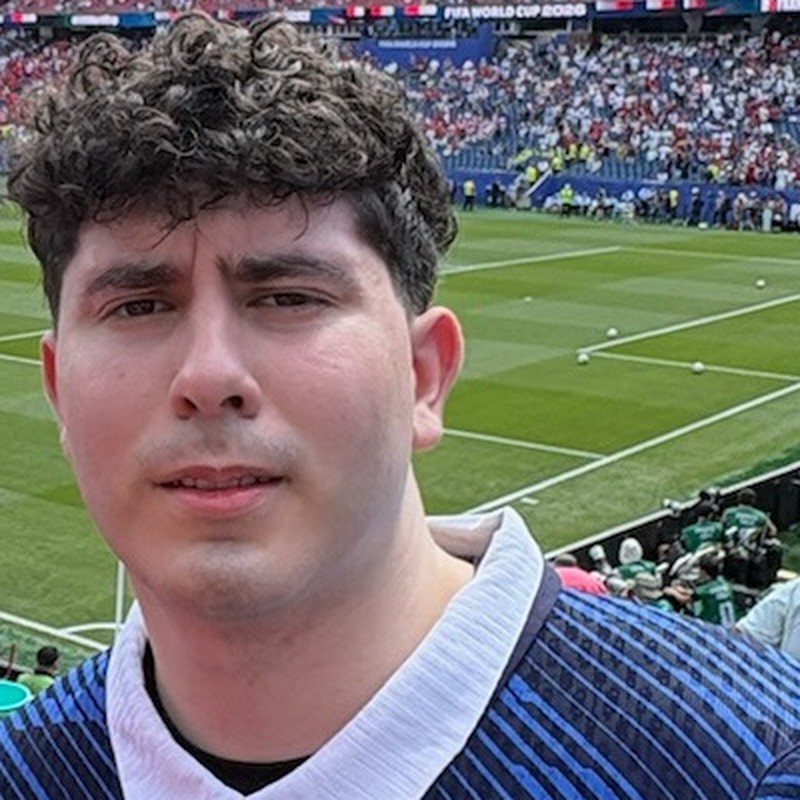
Group — face crop
Same-scale face row
Ryan's photograph beside all four states at one display scale.
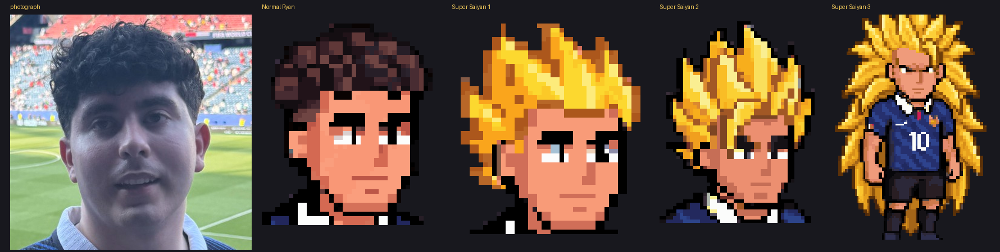
Photograph, Normal, SSJ1, SSJ2, SSJ3
Gaze check
Eye centres ringed, with a line dropped toward the viewer. All four states show both eyes with the pupils on the screen.
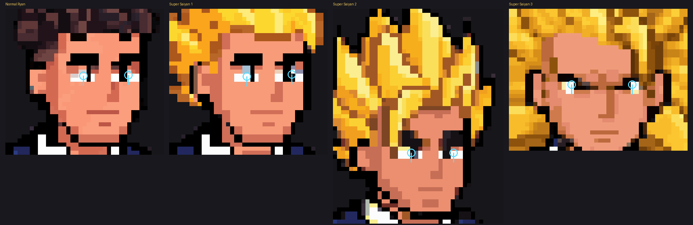
Eye centres and gaze direction, all four states
Internal structural identity
Shared character 7cac30da. Buzzed on purpose: this is what the three transformed forms are grown from, so there is no second hairstyle underneath any of them. It is not a public state.
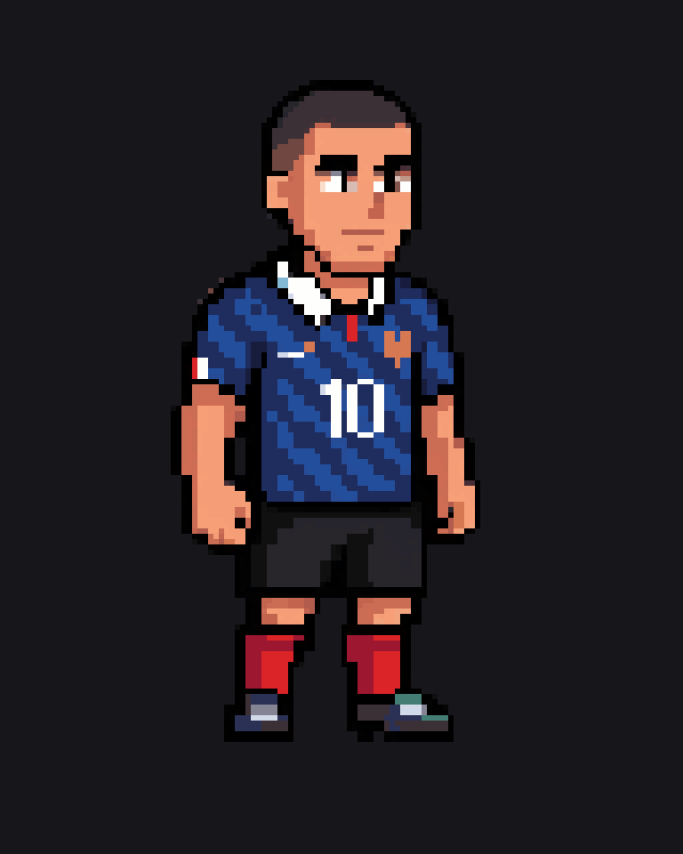
Internal identity, 6x
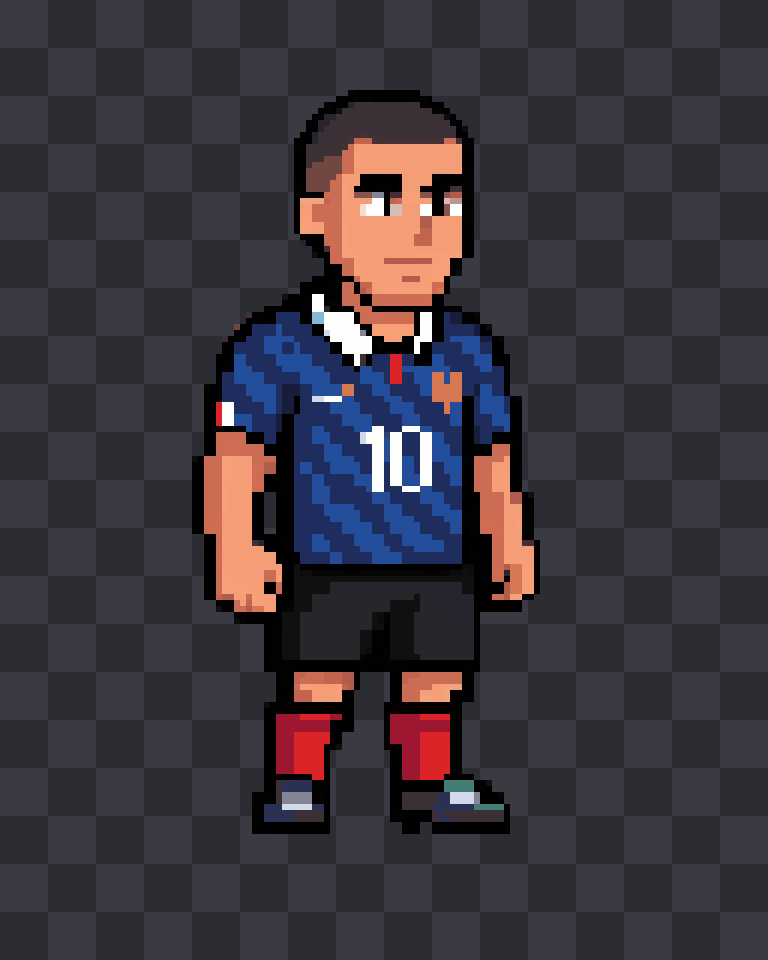
On transparent, 6x
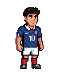
Photo-driven sprite it was edited from (before the buzz cut and black shorts)
Slot ownership — every opaque pixel painted by its owner. Magenta would mark an unexplained pixel; there are none.Reassembly proof: 0 differing pixelsAura layer alone, 4xLightning layer alone, 4x — empty by design
Slot ownership — every opaque pixel painted by its owner. Magenta would mark an unexplained pixel; there are none.Reassembly proof: 0 differing pixelsAura layer alone, 4xLightning layer alone, 4x
Slot ownership — every opaque pixel painted by its owner. Magenta would mark an unexplained pixel; there are none.Reassembly proof: 0 differing pixelsAura layer alone, 4xLightning layer alone, 4x
Measurements
total height
144
total width
90
opaque px
9025
head width
58
shoulder width
None
eye px
23
float offset
8
ground row
111
aura px
5314
lightning px
467
Layer slots
slot
normal
ssj1
ssj2
ssj3
hair_back
17
93
141
3521
head_skin
338
339
288
424
ears
62
69
96
64
face_shading
53
94
230
113
eyes
41
45
32
23
nose
12
10
4
5
mouth
28
8
9
14
brows_or_ssj3_ridge
61
39
77
0
hair_front
545
618
814
1092
neck
3
4
3
13
arm_near
314
314
274
252
hand_near
88
89
88
64
arm_far
207
212
209
174
hand_far
189
194
202
233
france_jersey
1625
1677
1519
1580
black_shorts
371
346
306
644
leg_near
46
46
69
38
leg_far
46
46
43
32
socks
451
454
437
298
shoes
444
446
452
441
SSJ3's eyebrow slot is empty by design — it has a brow ridge instead. Every other slot is populated in every state.
Generation ledger
call
endpoint
canvas
seed
charge
balance after
result
1
create_image_pro
128x160
4101
25
1806
PARTIAL
2
create_image_pro
128x160
7702
25
1781
REJECTED
3
edit_image
128x160
3310
20
1761
ACCEPTED
4
create_character
128x128
2
1759
ACCEPTED
5
create_character_state
144x144
40
1719
ACCEPTED
6
create_character_state
144x144
40
1679
ACCEPTED
7
create_character_state
144x144
40
1639
REJECTED
8
create_character_state
200x200
40
1599
REJECTED
9
create_character_state
144x144
881
40
1559
ACCEPTED
10
create_character_state
200x200
4407
40
1519
ACCEPTED
11
create_character_state
144x144
2201
pending
12
create_character_state
144x144
9315
pending
Why each candidate was rejected
call 1 — c1 is an excellent face likeness (dense curls, fuller face, thick brows, straight nose, olive skin) and c0 has the right front-facing arms-down pose, but every candidate kept the photo curls instead of the requested buzz cut, and c0/c2 gave France white/blue shorts instead of black. Kept as identity evidence; not used as the structural base.
call 2 — drifted into scene illustrations rather than clean sprites: c1 has a golf course and flag behind it, c2 is a waist-up holding a drink, c3 is running with a ball in front of a crowd. c0 is a portrait, not a full body. None gave the requested buzz cut - the photo curls were kept in every candidate.
call 7 — eyebrows are missing - the brief requires SSJ2 to keep thick dark eyebrows - and the socks came back France red instead of black. Stance, spike density and forward gaze were all correct.
call 8 — eyes rendered GREEN, which breaks Ryan dark-eyed identity across the set, and the socks came back red instead of black. Hair length, floating pose, brow ridge and forward gaze were all correct.
Balance remaining after this pass: 1439 generations.